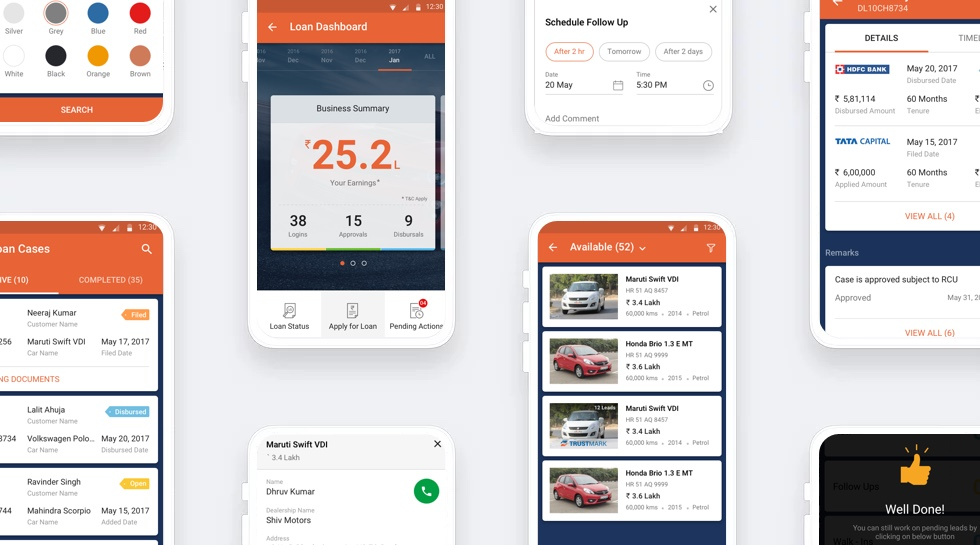
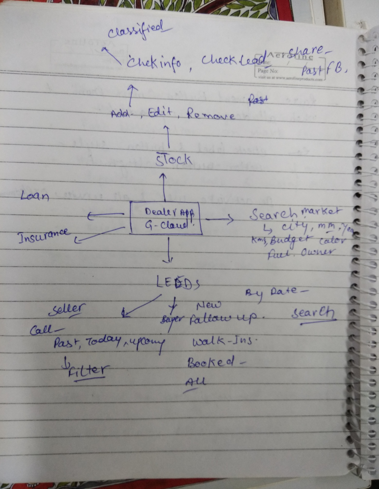
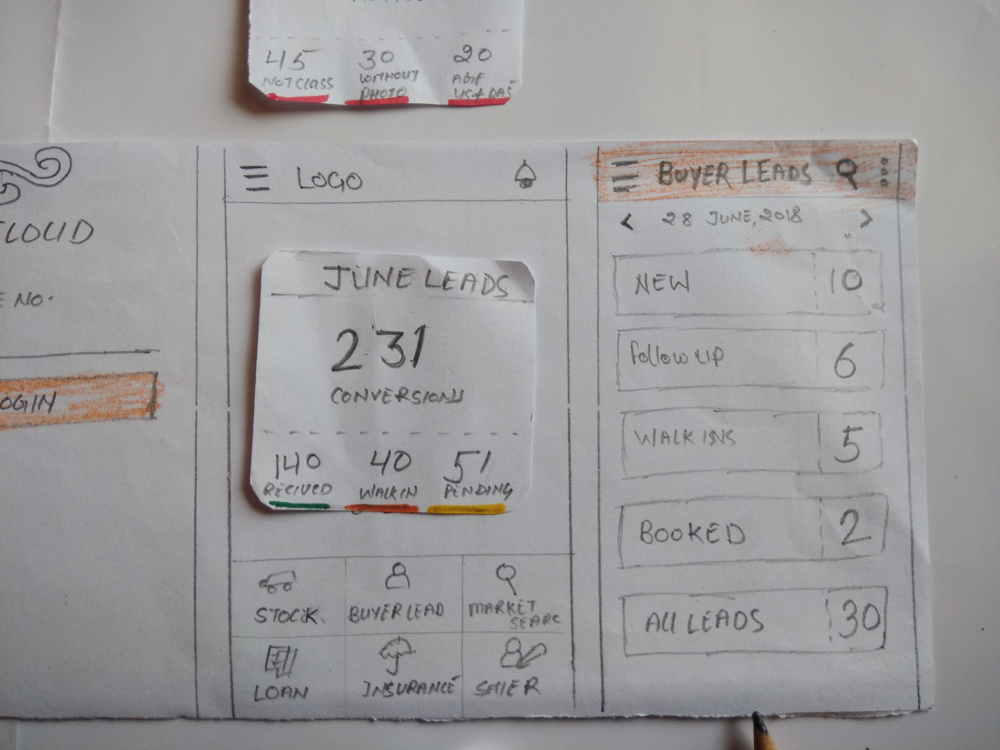

Gcloud - Dealer APP
July 2015 - Now
Work-In-Progress
Interaction Design
UI Design
Information Architecture
BACKGROUND
Objective: The purpose of Gcloud is an App from Gaadi.com and Cardekho.com focused towards Used Car Dealers helping them manage their dealership with ease like never before. This App consists of various functionalities required for day to day functioning of the dealership.
Product Preview

App Overview
THE CHALLENGE
With the booming economy, people are spending more and more money on Auto Vehicel industry. In india auto indusry are very un-organised pattern. Most of the dealer doing their business as offline or depend upon the paper and calls. So we plan to give a system for easy tracking the stocks and revenue. Need a system to manage lead functionality at one place, Call the Buyer/Seller or partner directly, so dealer don't miss out on sales. Need a easy search filters for manage leads more efficiently.

Goal
To reduce the process time and paperwork for dealers and customers.
RESEARCH
Understand the project requirments and Problems
The analysis of the Dealer needs, Buyer needs and our goal in the design exercise I have undertaken. It was important to capture every details offered to the dealer in app. The in-depth analysis of the current interface abd needs helped me define what I had to work on. After 2 years of daily usage, I gained a good understanding of the strengths and weaknesses of the our app.
Asking Questions
After analyzing the design challenge prompt, asking questions helps me determine further research direction and discover what is the real problem. Asking question also help me aware of my own assumptions. I asked questions like:
- What is the process of a dealer
- How does it help dealer
- What information involved when working?
- What are the scenarios and contexts of using App
- When and why do dealer need certain kind of information?
- How many service he/she needs?
- How to follow up with Buyer/Seller?

Wireframes of all steps
DEFINE
Understand the project requirments and Problems. How to solve for efficiency and scalability
After analyzing the processes followed by different dealers, we came up with a combined process flow which is flexible to include different requirements - mainly manage stockes,Lead details, Loan and insurance process. tracking, followup with customers and share details.
Initial ideas and feedback
IDEATION
Simplifying complexities with process flow
Research and process flow led us to create initial sketches where we explored set-up option for dealers, allowing track and followup facilities . We were able to test these ideas with dealers and their feedback led us to our final solution.
DESIGN
Wireframes
Research and process flow led us to create initial sketches where we explored set-up option for dealers, allowing track and followup facilities . We were able to test these ideas with dealers and their feedback led us to our final solution.
Prototypes
Research and process flow led us to create initial sketches where we explored set-up option for dealers, allowing track and followup facilities . We were able to test these ideas with dealers and their feedback led us to our final solution.
Paper Prototype


REFLECTION
Before starting the project, we was confident that it would be easy to find research participants. However, this turned out to be our biggest challenge. I learned to apply alternate research methods and ask as many questions as possible to the available research participants. Given the wide scope of this new feature, we decided to focus on only the important components.
Next
Some recommendations to take this project forward
- Conduct more usability tests
- Need to rollout and add few more feature
- Convert more easy process for RC transfer